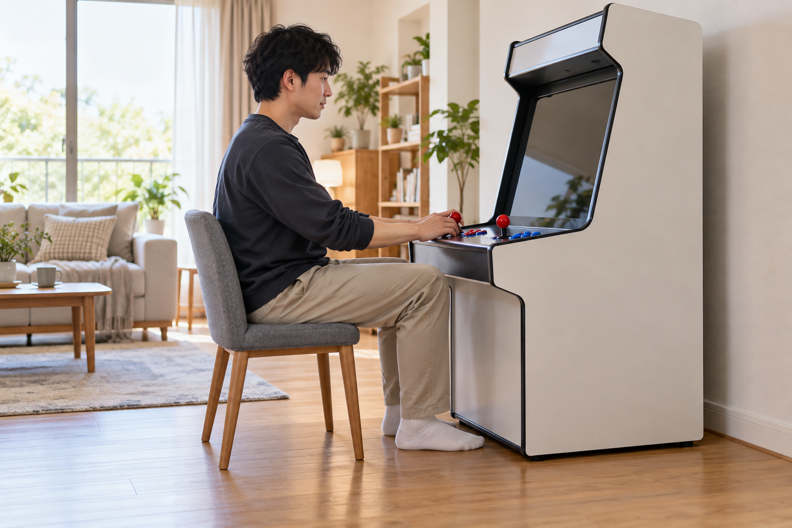
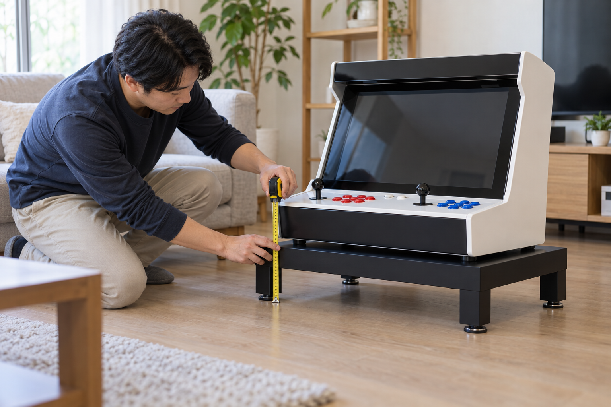

가정용 오락기 의자는 앉았을 때 발이 바닥에 안정적으로 닿고 팔이 조작부에 무리 없이 놓이는 높이로 고르세요. 받침대는 정확한 제품의 바닥 크기와 지지 위치가 모두 올라가며 흔들림 없이 놓이는지 확인해야 합니다. 같은 의자와 받침대라도 오락기의 형태와 사용하는 사람에 따라 맞는 조건이 달라질 수 있으므로 주문 전 제품명과 치수를 기준으로 점검하는 것이 좋습니다.
화면과 조작부 높이부터 확인하세요
의자나 받침대를 먼저 정하기보다 사용할 오락기의 화면과 조작부 높이를 확인하세요. 의자에 앉았을 때 목을 오래 숙이거나 올려다보지 않는지, 팔꿈치와 손목이 꺾이지 않고 조이스틱과 버튼에 닿는지 살펴보면 필요한 높이를 가늠하기 쉽습니다. 화면 크기와 시청 거리를 함께 비교하려면 가정용 오락기 화면 크기 비교 방법을 참고하세요.
화면과 조작부 높이를 함께 확인하면 의자와 받침대 중 어느 쪽을 조정해야 하는지 판단하기 쉽습니다.
노리박스 공개 제품 목록에는 스탠드형과 좌식형 오락기가 각각 등록되어 있습니다. 제품 형태가 다르면 기본 높이와 사용하는 자세도 달라질 수 있으므로, 다른 제품의 설치 사진만 보고 의자나 받침대 높이를 정하지 말고 정확한 제품명을 기준으로 확인하세요.

의자는 발과 팔이 안정되는지 살펴보세요
의자에 앉았을 때 두 발이 바닥에 안정적으로 닿고, 등을 지나치게 굽히지 않은 상태에서 조작부를 사용할 수 있는지 확인하세요. 팔걸이가 조작부나 본체에 부딪히지 않는지도 살펴보고, 바퀴가 있는 의자는 조작 중 움직이지 않도록 잠금 상태와 바닥 조건을 점검해야 합니다.
안정적인 의자는 발의 접지와 팔의 움직임을 동시에 방해하지 않아야 합니다.
여러 사람이 함께 사용한다면 한 사람에게만 맞춘 높이로 결정하지 말고, 자주 사용하는 사람들의 자세를 차례로 확인하세요. 조작부 형태에 따른 손의 위치는 가정용 오락기 조작부 비교 방법에서 함께 살펴볼 수 있습니다.

받침대는 제품 크기와 바닥 접촉을 확인하세요
받침대 윗면에 본체 바닥과 받침 위치가 모두 올라가는지 확인하고, 받침대 자체가 평평한 바닥에 흔들림 없이 놓이는지 살펴보세요. 본체보다 작은 받침대나 임의로 쌓은 가구는 제품을 안정적으로 지지하지 못할 수 있으므로 사용 가능 여부를 추측하지 말고 제품 치수와 판매 안내를 확인해야 합니다.
받침대는 본체의 지지면과 설치 바닥을 모두 안정적으로 받쳐야 합니다.
노리박스 공개 제품 목록에는 ‘노리박스 오락기 전용받침대’가 별도 상품으로 안내되어 있습니다. ‘전용’이라는 이름만 보고 모든 오락기에 공통으로 맞는다고 판단하지 말고, 주문하려는 오락기의 정확한 제품명과 받침대의 호환 여부·크기를 판매 안내에서 확인하세요. 전체 설치 공간을 재는 방법은 가정용 오락기 설치 공간 측정 방법에서 확인할 수 있습니다.
가족이 함께 쓰면 각 자세를 따로 점검하세요
가족이 번갈아 사용한다면 성인과 어린이 등 사용자별로 발의 접지, 화면 시선, 손목과 팔꿈치 위치를 각각 살펴보세요. 쿠션이나 임시 물건을 여러 겹 쌓아 높이를 맞추면 사용 중 위치가 달라질 수 있으므로, 안정적인 의자 높이나 제품에 맞는 받침 방법을 우선 검토하는 편이 좋습니다.
여러 사람이 사용하는 오락기는 각 사용자의 자세와 이동 동선을 따로 확인해야 합니다.
노리박스의 판매 제품과 형태는 제품 자세히 보기에서 확인할 수 있습니다. 의자 높이 또는 받침대 호환이 불분명하면 문의하기에서 정확한 오락기 제품명과 설치 공간의 치수를 함께 알려 주세요.